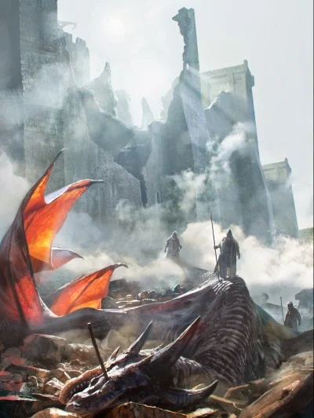
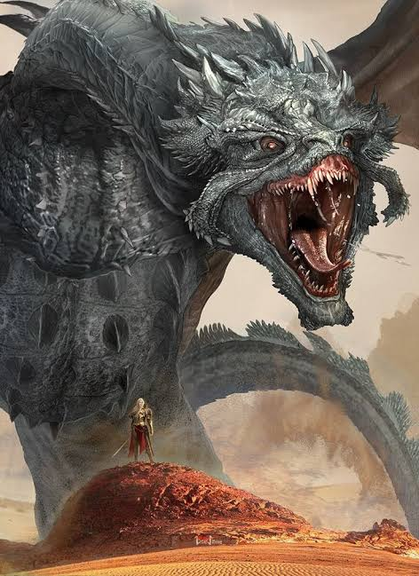
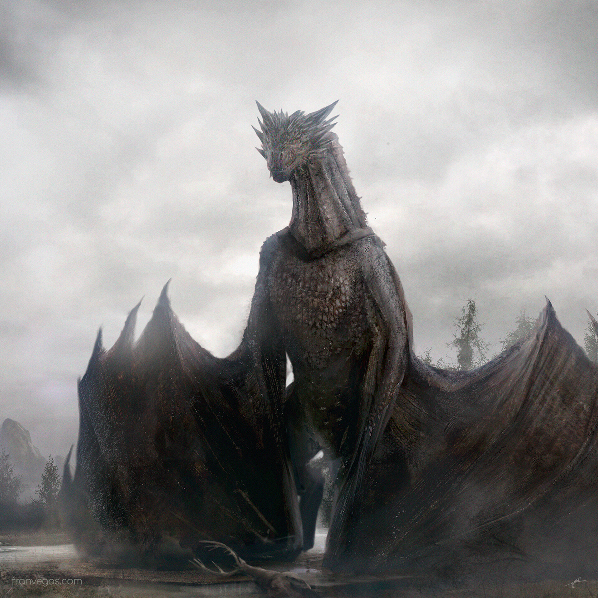

Meraxes foi uma das três grandes montarias dragão originais da Conquista, montada pela Rainha Rhaenys
Targaryen.
Com suas escamas de tom prata-fino e olhos dourados marcantes, ela era ainda maior que Vhagar na época e famosa
por conseguir engolir um cavalo inteiro de uma só vez.
Sua trajetória de glória ao lado de Rhaenys alcançou o ápice na devastadora batalha do Campo de Fogo, mas teve
um fim trágico e prematuro em Dorne, durante a Primeira Guerra Dornesa.
Meraxes foi derrubada em uma reviravolta histórica por um dardo de escorpião que atingiu diretamente seu olho,
caindo junto com sua montadora sobre o Castelo de Toca do Inferno e deixando seu crânio como um troféu de
resistência dornesa por anos.



proximo dragao dragao anterior Voltar ao Menu